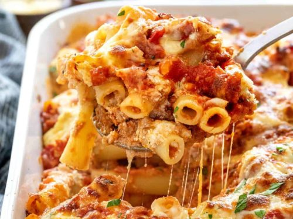

LASAGNA

Ingredients
- Rigatoni
- Ground Beef
- Spicy italian sausage
- Basil
- Tomato whole peeled
- Parmesean
- An oven I guess
- Large Spanish Onion
- Garlic
- Red Pepper Flakes
- Brown the beef on medium high
- Put beef in large bowl for now
- Repeat 1 and 2 for the sausage
- Cook onions on medium low until transluscent
- Into the pot goes garlic and red pepper flakes
- Crush the whole peeled tomatoes in the pot with the onions
- Add basil and the thick hard part of the parmesean block at the top
- Bring pot to a boil and then turn the heat down and let simmer for 45 mins
- Cook pasta in salted boiling water for 5-8mins or as box instructs
- Now add all of this into a baking pan and grate parmesean on top
- Place in 350 degree oven covered for 45mins uncovered for 10mins or until cheese is brown and bubbling
- Wait 5mins then serve